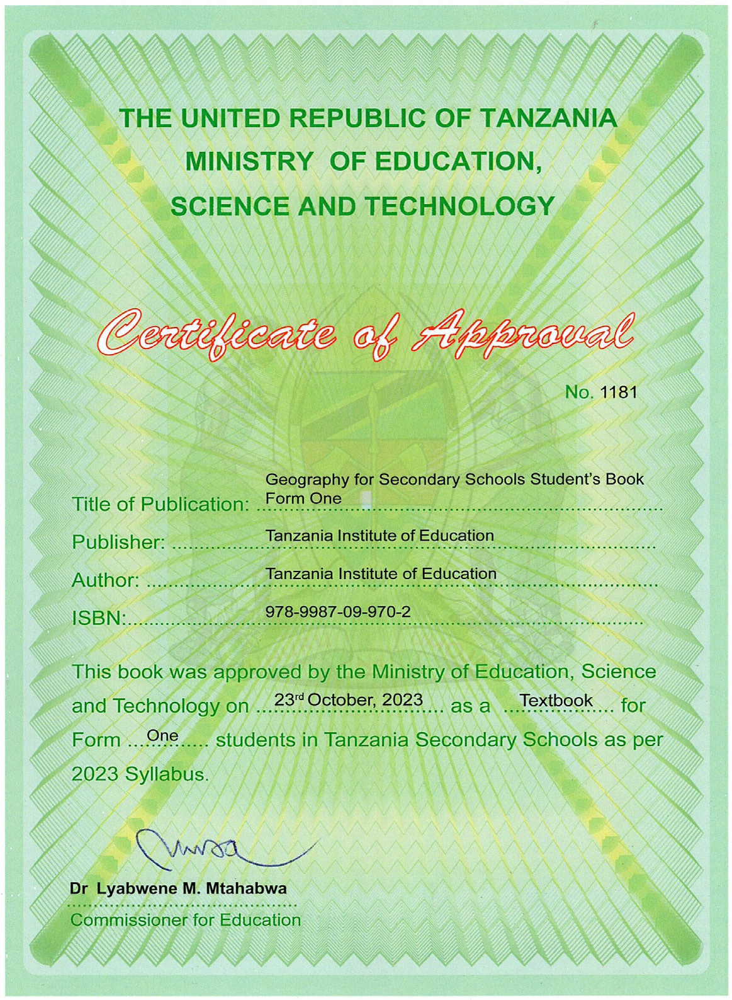

Geography
for Secondary Schools
Student’s Book
Form One

THE UNITED REPUBLIC OF TANZANIAMINISTRY OF EDUCATION, SCIENCE AND TECHNOLOGYCertificate of ApprovalNo. 1181Title of Publication: Geography for Secondary Schools Student’s Book Form OnePublisher: Tanzania Institute of EducationAuthor: Tanzania Institute of EducationISBN: 978-9987-09-970-2This book was approved by the Ministry of Education, Science and Technology on 23rd October, 2023 as a Textbook for Form One students in Tanzania Secondary Schools as per 2023 Syllabus.Dr Lyabwene M. MtahabwaCommissioner for Education
Tanzania Institute of Education